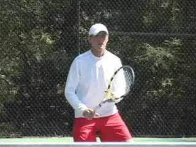
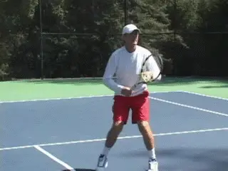

Previous: Serving Rhythm and Serving Stance | 🏠 Classic Lessons Home | Next: Shot to Shot Readiness Part II
Shot to Shot Readiness Part II:
Comprehensive unified tennis knowledge base — Fundamentals, Stroke Analysis, Reference Library, and more
Shot to Shot Readiness Part II:
On Court Drills
Scott Murphy
In my article in the June issue of Tennisplayer, I argued that shot to shot readiness is an absolute prerequisite for successful stroke execution. This is true not only at the top levels of the game, but especially at the club level. (Click Here.)
On court drills are the key to staying ready over the course of a match.
As we saw, there is a precious 3 second window between shots in club tennis, and this pattern repeats over and over for a long as a point continues. You need every bit of this window to recover, prepare, move, set up, and execute the next shot.
Far too many players waste most of this interval, by not reacting until the ball bounces on their side. By then it's simply too late. There literally is not enough time to execute a quality technical stroke. This is why I say shot to shot readiness is a fundamental building block in learning tennis.
In the first article, we also presented the movement sequences you need to develop shot to shot readiness in the backcourt, at the net, and on the serve. But what experience shows is that when players begin to follow these patterns and develop true readiness, they are often surprised at how much more physical and more strenuous their tennis becomes.
In this article I'll present drills I incorporate into my lessons to improve readiness.
That's great because it means they are really starting to play the game. But it usually also means that to stay ready over the course of a match, they need to improve their condition. To do this I build a series of movement and conditioning drills into their regular lesson routines. These drills improve their capacity to go through the stroke sequences, over and over. At the same time they help students execute these sequences with greater quickness and precision.
To Train or Not to Train
On Tennisplayer, we have two amazing cross training systems, one from Pat Etcheberry and the other from Paul Roetert. (Click Here) As great as they are, not every player has the time or the desire to implement these sophisticated blends of weight training, aerobic, and anaerobic conditioning.
But the good news is that any player can make significant gains by incorporating a relatively small amount of work into normal lesson and practice times. I have found that just a few minutes doing these drills once or twice a week will yield marked improvement in your ability to stay truly ready and move through the sequences outlined in the first article on a repeated basis while maintaining your form.
Typically, I do these exercises in the last few minutes of the lesson. I like to combine a wide variety of movement patterns, done at different speeds, with change of directions--sometimes a single drill. So here are 11 of my favorites, drills that will have an immediate impact on your quickness, balance, and ability to position more precisely. At the same time, they will build the stamina you need to be ready shot to shot, point to point, and game to game.
I've given a detailed description of the step patterns for each of the drills, which is one way to work through mastering them, particularly the more complex ones, such as the ladder drills. But some players may find that they can bypass the words, just watch the drill a few times and then go out naturally replicate the patterns
How many drills players should do and how many repetitions of each drill will vary, with the player's experience and starting level of condition. You can start with just 2 or 3 drills, then one or possibly two sets of each. Or you can do one set of 5 drills. Vary things to keep it interesting.
Over time you can build up to doing more. You can do one set of all the drills. Or pick 5 drills and do two or three sets. You get the idea. Evolve it over time to continue to push your level.
Ladder Side Step
I love to do a variety of sports ladder drills to develop faster feet and improve balance. If you want info on how to get a ladder for yourself from our friend Joe Dinoffer at OnCourtOffCourt, Click Here. Here's the most basic ladder drill I do with students. Start sideways at one end of the ladder. Use fast, short, choppy steps as you work through the rungs. Both feet should touch down in each opening. When you get to the end of the ladder, turn and sprint to the net.
Ladder In and Out
Start on one side of the ladder, facing the net. Now take a side step into the first opening. Then step out. Now step into the second opening then out, etc. Work all the way up the rungs. As you move keep the outside foot moving as quickly as possible with short choppy steps. Again when you get to the end of the ladder sprint to the net. Do the same drill on the opposite side of the ladder, going in and out with the other foot.
Ladder In and Out -- Both Sides
The next three ladder drills are more complex patterns, so if you look in the animations, we've slowed them down so you can see how the feet move. Start facing the ladder. Step into the first opening with your right foot. Now replace the right foot with the left foot in the opening. At the same time, step out to the right with your right foot. Next step forward into the next opening with the left foot. Now replace the left foot with the right foot in the ladder opening. At the same time, step out to the left with the left foot. Now just repeat the pattern all the way down the rungs. Again when you clear the ladder sprint to the net.
Ladder Crossover
Again we'll slow it down in the animation so you can see the pattern more clearly. This drill is great for working on the crossover steps that are central to recovery on wide balls. Start directly behind the ladder. Step into the first opening with your left foot. Now step outside the ladder to your right with the right foot.
Next step outside to your right with your left foot, so both feet are outside on the right side.Now take the crossover step with the outside right foot into the next opening. Step across and outside the ladder with the left foot. Now bring the right foot outside, so both feet are again outside, but on the right side.Next take a crossover step with the left foot into the next opening. The right foot goes outside, and then is followed by the left.
Now just keep going with the crossovers, taking both feet outside, etc. As usual when you get through the ladder, sprint to the net.
Ladder Reverse
OK, now let's get fancy with some reverse pivot steps. This one is great for balance and changing direction. Start at the right edge of the ladder. Now reverse pivot with your left foot, basically turning your toes to point at the side fence. Now step backwards into the ladder opening with the right foot. Now step across and outside the ladder with your left foot. Now step out with the right foot turning so the toes now point at the opposite sideline.
Now step backwards again with the left foot into the next opening. Step across and outside the ladder with the right foot, toes pointing forward. Bring the left foot across and outside the ladder turning your body with the toes pointing back at the other sideline. Now you're ready for another backwards step with the right foot, and the continuation of the pattern. Sprint to the net when you clear the ladder.
Sprint Box
Here's a simple one to work on your speed and also conditioning. Start on the baseline at the singles sideline. Sprint to the net, now turn to your left and jog to the other sideline. Turn left and sprint to the baseline. Now turn left again, and jog back across the sideline where you started. You can do one sprint box or multiples. You can also reverse the segments jogging up and back to the net and sprinting across.
Tennis Ball Suicide
Start on the doubles side line facing the opposite side fence with a ball in your hand. Explode forward and put the ball down on the singles sideline. Backpedal to the doubles line. Explode forward again, grab the ball, continue to the center service line. Place the ball gently down. Turn and sprint back to the doubles line. Now continue the pattern. Turn, sprint, pick up the ball, take it to the singles sideline. Turn, sprint back, turn again, sprint, pick up the ball and take it to the far doubles sideline. Then one more loop. Pick up the ball on the doubles sideline, turn and finish strong, sprinting all the way back.
Sideline Stutter Step
This one is harder than it looks! Start straddling the doubles sideline in the ready position. Now start the feet chopping, but with the outside right foot, step back and forth across the doubles sideline. Take 4 or 5 steps on either side of the line with the right foot. Now turn, sprint to the other sideline and repeat, only this time it's the left foot. Again take 4 or 5 stutter steps back and forth over the sideline. Remember to keep the other foot chopping. Turn and sprint back to the other doubles sideline. As with the other exercises, you can build up to several repetitions.
Catch and Shuffle
This one helps with alignment to the ball and quickness in recovery. Start in the ready position. Have your partner toss the ball 3 feet or so to the side. Take an out step, a cross over step, and then one more step with the right foot so that you foot lines up behind the incoming ball. Make the catch, toss it back and shuffle to the middle. Repeat to the other side. Work for 3 to 5 balls or more on either side. Again you can repeat with multiple sets and increase the width of the throws by a step as you get quicker and better conditioned.
Change of Direction 1
Use 4 cones or other markers to create a box inside the back quarter of the court. Start in the center of the box. Your partner signals by pointing to any of the four corners. Move to the corner then shuffle back to the middle. One of the great things about this drill is the unpredictability of the movement. You have to watch his hand for the cue, and this helps you speed up your reaction times. In addition, this drill forces you to alternate the patterns of your steps. Watch the differences coming forward and going back. You can increase the number of direction changes as your conditioning improves.
Change of Direction 2
This is a more free form version of the first change of direction drill. Your partner can signal to either side. When he or she takes the ball down to the ground this means to stop and take fast steps in the ready position. Raising the arm straight up means you backpedal and hit a shadow overhead. When he brings to ball forward to his body, that's the signal to sprint forward. Figure out the time duration for this drill that pushes you slightly past your current level of stamina and then keep working to push the edge.
So that's it for Part 2. Try getting really, really ready, and staying ready and you'll find a huge improvement in your intensity, your movement, your competitive results, and especially and most importantly how much you love this great game.
AND lastly but not leastly, special thanks to my wife Cynthia Bascara, star Harbor Point USTA League player, for doing such a great job in helping demonstrate the drills!
Scott Murphy is from Marin County, California where he started playing tennis at age 5 in a family of tennis nuts. Both of his parents were major influences in his development. He also took lessons from Marin legend Hal Wagner and former top 10, Harry Roach. Scott is a graduate of the University of California at Berkeley where he played baseball and football but continued to work on his tennis game with renowned coach Chet Murphy.
He was the head pro at San Domenico/Sleepy Hollow Tennis Club for over 20 years. He also directed the Nike Tahoe Tennis Camp at the Granlibakken Resort for 10 years. Scott now teaches privately in Ross, Marin County and in the summer he directs the Tuscan Tennis Academy which he founded in Quarrata, Italy.
Check out Scott's website at scottmurphytennis.net
You can contact Scott directly at: scottmrph@yahoo.com
Additional figures (from header/footer of source docx):





Source: tennisplayer.net archive — Shot to Shot Readiness Part II.docx (John Yandell teaching library, 2002-2022). Extracted and rendered as HTML for Tennis Future Lab.